1. How many electrons occupy the bonding molecular orbitals of a CN triple bond? A) 2 B) 4 C) 6 D) 8
2. Which of the following species is not amphoteric ? A) NH3 B) HF C) NH4(+) D) HCO3(-)
3 What is the relationship of the two structures shown below?
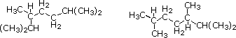
4 Which of the following molecules will not have a dipole moment? A) CH3Cl B) CH3OCH3 C) CH2Cl2 D) CCl4
5 Which of the following molecules has a dipole moment? A) CBr4 B) CH2=CH2 C) BF3 D) SO2
6 Which of the following molecules has a linear shape? A) NH3 B) H2S C) CO2 D) H2CO
7 Which of the following intermediates is pyramidal in shape? A) H3C(+) B) H2C: C) H3C:(-) D) HC≡C:(-)
8 In which compound does carbon have the highest oxidation state? A) CH4 B) HCN C) H2CO D) CH2Cl2
9 Which of the following statements applies to a C10H14O2 compound? A) it may have 2 double bonds and 2 rings B) it may have 3 double bonds and 0 rings C) it may have 1 triple bond and 3 rings D) it may have 0 double bonds and 3 rings
10 What functional group is present in the terpene camphor?
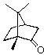
11 What functional class is represented by the alkaloid coniine?
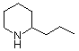
12 Which of the following compounds would be considered an electrophilic reagent? A) NH3 B) Br2 C) CH3OH D) NH2OH
13 Which of the following compounds would you expect to be most soluble in water? A) CH2Cl2 B) C6H12 (cyclohexane) C) CH3CH2OH D) C2H5OC2H5
14 The following compounds have similar molecular weights. Which has the highest boiling point? A) CH3CH=O B) C2H5OH C) CH3OCH3 D) CH3CH2CH3
15 Which of the following compound pairs are constitutional isomers? A) CH3CH2OCH3 and CH3CH2CHO B) CH3CH2CHO and CH3CH2CH2OH C) CH3COCH2CH3 and CH3CH2COCH3 D) CH3CH2CH2CHO and CH3COCH2CH3
16 Which of the following compounds may be classed as a protic solvent? A) tert-butanol B) diethyl ether C) n-hexane D) acetone
17 Classify the following reaction.
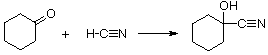
18 Which of the following is not a nucleophile? A) H2O B) CH3NH2 C) C2H5SH D) C6H12 (cyclohexane)
19 Which of the following is not an electrophile? A) C2H5OC2H5 B) BF3 C) [CH3]3C(+) D) HOCl
20 Which Lewis formula is the best representation of N2O?
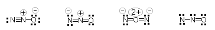
21 Which of the following compounds has a C-H bond with the lowest bond dissociation energy? A) C2H6 B) C6H6 C) C2H2 D) CH3CH=CH2
22 In order for a reagent to behave as a nucleophile it must have ... A) an overall positive charge. B) an overall negative charge. C) a non-bonding electron pair. D) a nitrogen or sulfur atom.
23 The H–C–O bond angle in H2C=O (formaldehyde) is approximately ..... A) 90º B) 109º. C) 120º. D) 180º.
24 Which of the following structural pairs represents contributors to a resonance hybrid?
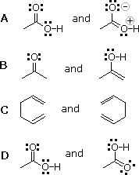
25 Which of the following molecular formulas is reasonable for a stable compound? A) C8H14O2Cl B) C6H14Br2 C) C7H10NF D) C30H54N2Cl
26 What formal charges are present in the molecule C6H5C≡N-O? ( all heavy atoms have a valence shell octet, and C6H5- is a phenyl group) A) N is -1 and C is +1 B) N is +1 and C is -1 C) O is -1 and C is +1 D) O is -1 and N is +1
27 Which statement about members of a homologous series is true ? A) they are all constitutional isomers. B) they are always hydrocarbons. C) each differs from its nearest neighbors by 14 amu. D) they may also be classified as tautomers.
28 How many structurally distinct (different) sets of hydrogens are present in (CH3)3CCH2OCH3? A) 2 B) 3 C) 4 D) 8
29 The pKas of H2CO3 are 6.4 & 10.3. The pKa of HOBr is 8.7. If equimolar amounts of Na2CO3 and HOBr are dissolved in water what will be the predominant anionic species in the resulting solution? A) HCO3-1 and BrO-1 B) CO3-2, Br-1 and OH-1 C) HCO3-1 and Br-1 D) CO3-2 and 2 BrO-1
30 Which of the following is a conjugate base of CH3NHOH? A) CH3NH-1 B) CH3NHO-1 C) CH3NH3+1 D) CH2=NOH-1
31 A Lewis formula for diazomethane, CH2N2, is shown on the left below. Which of the formulas within the brackets would be considered a proper resonance contributor to this structure ?
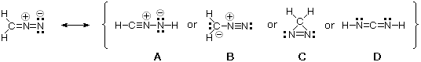
32 The curved arrows in the formula on the left represent a chemical reaction. Which of the formulas within the brackets would constitute the product(s) from this reaction ?
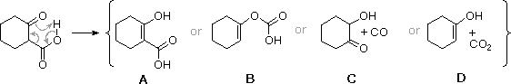
33 Which of the descriptions (A to D) correctly describe the following energy diagram?
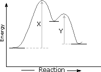
34 Which of the following series contain a free radical, a nucleophile and an electrophile? A) Br· BF3 NH3 B) NH3 NO2+ Br2 C) H2O Cl· NH3 D) Cl2 CH4 NH3
35 The curved arrows in the formula on the left represent a chemical reaction. Which of the formulas within the brackets would constitute the product(s) from this reaction ?
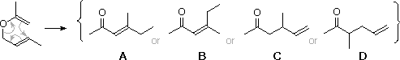
36 Which of the following species has a planar molecular configuration? A) SO3-2 B) SO3 C) SOCl2 D) SO2Cl2
37 Which of the following compounds does not have a planar molecular configuration? A) H2C=CH2 B) H2C=CH–C≡CH C) H2C=C=CH2 D) H2C=C=C=CH2
38 How many degrees of unsaturation does the following structure have?
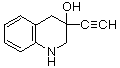
39 The structural formula for vitamin C is shown below Of the four hydroxyl groups, identified by shaded circles, which is most acidic?
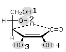
40 Which of the following structures is not a resonance contributor to the hybrid defined by the other three?
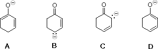
41 The following structures are resonance contributors for a reactive intermediate formed during ozonolysis of alkenes. Identify the most energetically favorable and the least favorable contributors?
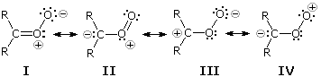
42 How would the bond strength of the C:C double bond in an alkene compare to that of a C:C single bond in the corresponding alkane? A) The double bond would have the same strength as the single bond. B) The double bond would be stronger than, but less than twice as strong as the single bond. C) The double bond would have exactly twice the strength of the single bond. D) The double bond would have more than twice the strength of the single bond.
43 Which of the following cations is most stable? A) FH2+ B) OH3+ C) NH4+ D) CH5+
44 The toxic environmental pollutant dioxin is 44.8% carbon, 1.25% hydrogen and 44.0% chlorine. Its molecular weight is 320±10 What is the molecular formula of dioxin? A) C10H8O4Cl4 B) C12H6O2Cl4 C) C6H2OCl2 D) C12H4O2Cl4
45 Which of the following covalent compounds does not have any formally charged atoms? A) (CH3)3NO B) CH2=N=N C) CH3-O-N=O D) CH3C≡NO
46 Which of the following statements is not generally correct? A) endothermic reactions have larger energies of activation than exothermic reactions B) the rate of a reaction is proportional to its activation energy C) the rate of a reaction generally increases as the temperature is raised D) all reactions in which bonds are broken and formed have a significant activation energy
47 Which of the following compounds has no isomer? A) CH3CH2CH2Cl B) CH3CHO C) CH2=CHCl D) ClCH2CH2Cl
48 Which of the following statements about carbon is not correct? A) carbon forms strong covalent bonds to itself, allowing chains and rings to be made. B) carbon expands its valence shell to accomodate more than eight electrons and thus forms double and triple bonds. C) carbon forms strong covalent bonds to elements like nitrogen and oxygen because it does not have lone pairs of valence electrons to destabilize the bonds. D) carbon and hydrogen have similar electronegativity and form strong bonds to each other, thus avoiding the high reactivity shown by metal hydrides.